The milestone I am proudest of
Ph.D. in Electrical and Computer Engineering
Mississippi State University · defended July 2025 · conferred December 2025
Dissertation: Complex-Valued Parameterized Learnable Filters for Time-Frequency Domain Based Classification
Major Professor: Dr. John E. Ball. Dissertation Director: Dr. Ali C. Gurbuz. The dissertation brought together four years of work on neural networks that learn interpretable, physically meaningful filters directly from raw radar and RF signals: CV-SincNet, PLFNets, HRSpecNet, and the time-gated filters that became TG-PLFNet.

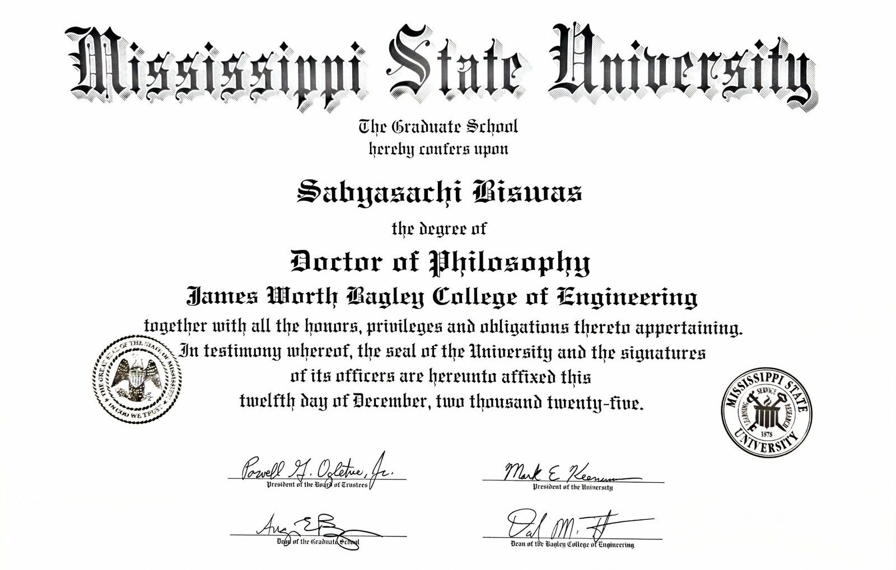

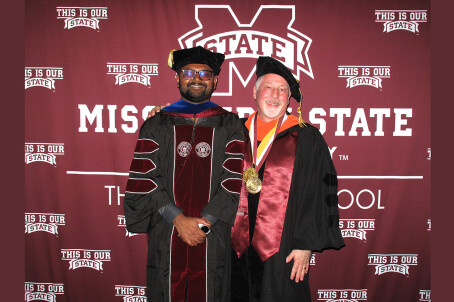

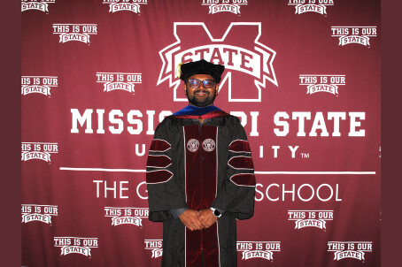

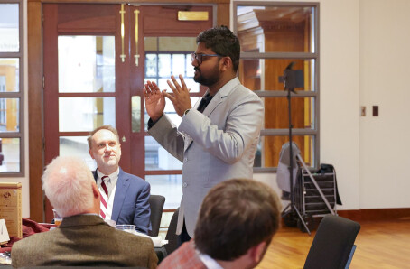

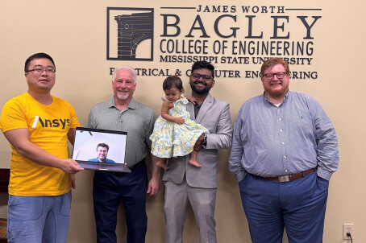

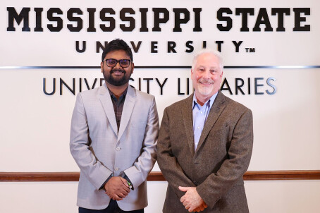

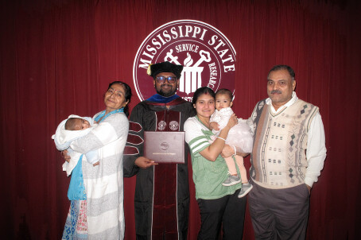
Honors and awards
-
2024–25
Best Graduate Student
James Worth Bagley College of Engineering, Mississippi State University
The college’s award for its top graduate student researcher of the year.
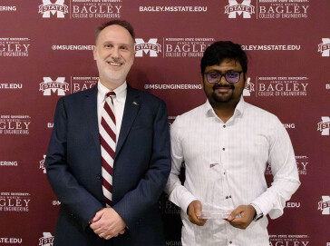
Receiving the Bagley College of Engineering Best Graduate Student award. -
2024–25
Best Graduate Researcher
Department of Electrical and Computer Engineering, Mississippi State University
Presented at the department’s Distinguished Alumnus and Graduate Student Awards, Spring 2025.
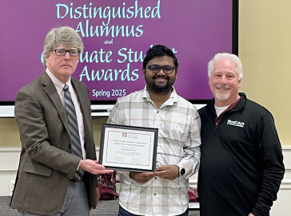
Receiving the ECE Best Graduate Researcher award, Spring 2025. -
2025
Student Paper Competition Finalist
2025 IEEE International Radar Conference (RADAR), Atlanta, GA
For “Learnable Gaussian Filter-based Automatic RF Waveform Modulation Recognition.”
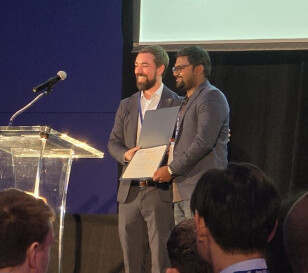
Recognized as a Student Paper Competition finalist at RADAR 2025. -
2025
2nd Runner-Up
1st Multimodal Italian Sign Language Recognition Challenge, ICCV 2025 workshops
With Sultan Mohammad Manjur, using fused video and radar data.
-
2024
Radar Challenge Finalist
2024 IEEE Radar Conference (RadarConf24), Denver, CO
-
2024
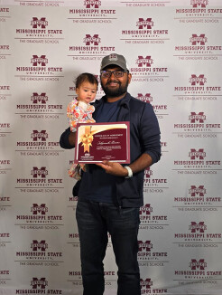
With the winner’s plaque, Graduate Research Symposium 2024. -
2023
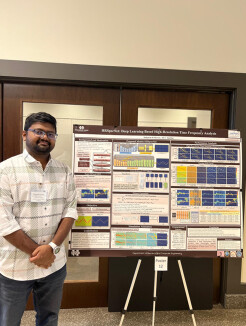
At the poster, Graduate Research Symposium 2023. -
2022
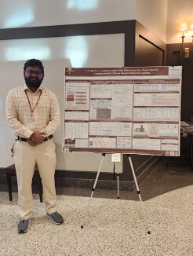
At the poster, Graduate Research Symposium 2022. -
2022
-
2017
2nd Runner-Up, Battle Bot
Bangladesh University of Engineering and Technology (BUET), Dhaka
Robot combat competition.
-
2017
2nd Runner-Up, Line Following Robot (LFR)
BUET RoboCarnival, Bangladesh University of Engineering and Technology, Dhaka
-
2017
1st Runner-Up
NSU Tech Carnival, North South University, Dhaka
Robotics competition.
-
2017
1st Runner-Up
MIST Robolution, Military Institute of Science and Technology, Dhaka
Robotics competition.
-
2016
2nd Runner-Up, Line Following Robot (LFR)
IUT Esonance, Islamic University of Technology, Gazipur
The video shows my line-following robot on the Esonance 2016 track.
My line-following robot at IUT Esonance 2016.